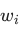
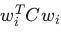
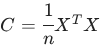
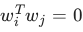
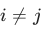
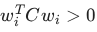
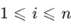
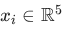

Home / MLT / Week 1 / Real questions
MLT week 1 - real exam questions
32 questions pulled from past papers whose wording matches this week's topics, newest first, duplicates removed. Pick your answers, then press Check answers. Figures and answer keys are the originals.
Elapsed 00:00
For the covariance matrix
 , compute the variance captured along the first principal component.
, compute the variance captured along the first principal component.
, compute the variance captured along the first principal component.


Consider a mean-centred dataset  consisting of 5000 points in
consisting of 5000 points in  with features
with features  .Every data point satisfies
.Every data point satisfies  The independent base feature
The independent base feature  has variance
has variance  . The remaining features
. The remaining features  are mutually uncorrelated, uncorrelated with , and each has variance
are mutually uncorrelated, uncorrelated with , and each has variance  .Standard PCA is performed on this dataset. Let
.Standard PCA is performed on this dataset. Let  denote the eigenvalues of the covariance matrix in descending order. Which of the following statements is strictly true?
denote the eigenvalues of the covariance matrix in descending order. Which of the following statements is strictly true?
consisting of 5000 points in with features .Every data point satisfies The independent base feature has variance . The remaining features are mutually uncorrelated, uncorrelated with , and each has variance .Standard PCA is performed on this dataset. Let denote the eigenvalues of the covariance matrix in descending order. Which of the following statements is strictly true?- Exactly 3 eigenvalues are zero:
 , and
, and 
- Exactly 4 eigenvalues are zero(
 ), and
), and 
- Exactly 4 eigenvalues are zero( ), and
- Exactly 2 eigenvalues are zero(
 ), and
), and  lies somewhere in the -
lies somewhere in the -  -
-  subspace.
subspace.
Let  be a dataset of
be a dataset of  observations where each
observations where each  .It is given that
.It is given that
 The covariance matrix computed from has eigenvalues
The covariance matrix computed from has eigenvalues  Let
Let  be the direction of maximum variance with
be the direction of maximum variance with  . Find the value of
. Find the value of
 .
.
be a dataset of observations where each .It is given that
The covariance matrix computed from has eigenvalues Let be the direction of maximum variance with . Find the value of
.Let  be the covariance matrix of a centered dataset with
be the covariance matrix of a centered dataset with  data-points in , where
data-points in , where  is the data-matrix of shape
is the data-matrix of shape  . Let
. Let  principal component. Which of the following is/are true?
principal component. Which of the following is/are true?
be the covariance matrix of a centered dataset with data-points in , where is the data-matrix of shape . Let 
be the principal component. Which of the following is/are true?
is the variance of the dataset along

, for

for each satisfying
Consider a dataset  , where each
, where each
, where each 
. Principal Component Analysis (PCA) is applied to this dataset and all the five principal components are retained. Which of the following statements is correct?- PCA has reduced the dimensionality of the dataset because the combinations of features are de-correlated
- PCA has not reduced the dimensionality of the dataset because all principal components are retained.
- PCA always reduces the dimensionality of the dataset regardless of the number of components retained.
- PCA can never be used for dimensionality reduction.

- PCA has reduced the dimensionality of the dataset because the combinations of features are de-correlated.
- PCA has not reduced the dimensionality of the dataset because all principal components are retained.
- PCA always reduces the dimensionality of the dataset regardless of the number of components retained.
- PCA can never be used for dimensionality reduction.
Comprehension passage for this question
Consider a cube of edge-length
 centered at the origin with its corners represented as
centered at the origin with its corners represented as
 . These eight points make up a dataset
. These eight points make up a dataset
 . Based on the above data, answer the given subquestions.
. Based on the above data, answer the given subquestions.Find the covariance matrix
of the dataset. Enter the sum of all the entries of
as the answer.
of the dataset. Enter the sum of all the entries of
as the answer.Comprehension passage for this question
Answer true or false for the given subquestions.If
`A` is a data-matrix of shape
`A^T A`
 and
and
 `A A^T` have the same eigenvectors.
`A A^T` have the same eigenvectors.
`A` is a data-matrix of shape
`A^T A`
and
`A A^T` have the same eigenvectors.- True
- False
A centered dataset in  is projected onto its first two principal components. The first and the second principal components are respectively.
is projected onto its first two principal components. The first and the second principal components are respectively.
 Then, which of the following vectors could be a valid third principal component?
Then, which of the following vectors could be a valid third principal component?
is projected onto its first two principal components. The first and the second principal components are respectively.
Then, which of the following vectors could be a valid third principal component?


- There will be 50 non-zero eigenvalues of the covariance matrix.
- There will be 6 non-zero eigenvalues of the covariance matrix.
- Using the first 5 principal components, the dataset can be reconstructed withzero residue.
- The variance captured by the top 6 principal components equals the totalvariance of the dataset.
Comprehension passage for this question
Based on the above data, answer the given subquestions.

What is the covariance matrix of the dataset?


Comprehension passage for this question
Based on the above data, answer the given subquestions.
If standard PCA is performed on this dataset, what is the variance along the first principal component? Enter the answer correct to one decimal place.
Comprehension passage for this question
Based on the above data, answer the given subquestions.
If standard PCA is performed on this dataset, what is the variance along the second principal component? Enter the answer correct to one decimal place.
Comprehension passage for this question
Based on the above data, answer the given subquestions.

Which of the following represents the covariance matrix C?


Comprehension passage for this question
Based on the above data, answer the given subquestions.
What is the variance of the dataset along the first principal component?
Comprehension passage for this question
Based on the above data, answer the given subquestions.
Find the residues after projecting the data points onto the first principal component.
 Find the residues after projecting the data points onto the first principal component.
Find the residues after projecting the data points onto the first principal component.
Find the residues after projecting the data points onto the first principal component.


- Kernel PCA with a polynomial kernel of degree 2.
- Kernel PCA with a polynomial kernel of degree 3.
- Kernel PCA with a polynomial kernel of degree 4.
- Standard PCA
Which of the following statements correctly differentiates PCA and Kernel PCA?
- PCA maximizes variance in the original feature space, while Kernel PCAmaximizes variance in a higher-dimensional transformed space.
- PCA finds principal components using linear transformations in the originalspace, while Kernel PCA uses non-linear transformations to find principal components in a higher-dimensional space.
- Kernel PCA can capture non-linear patterns in data, making it useful when PCAfails to represent complex structures in a linear space.
- PCA and Kernel PCA always yield identical results regardless of the datasetstructure.
Comprehension passage for this question
Based on the above data, answer the given subquestions.

If standard PCA is performed on this dataset, what is the variance along the first principal component? Enter the answer correct to two decimal places.
Kernel PCA with a polynomial kernel of degree 3 is run on a dataset of 100 data-points. Let ϕ be the transformation corresponding to this kernel. If the largest eigenvalue of the centered kernel matrix is 10, find the largest eigenvalue of the covariance matrix of the transformed dataset, where ϕ is used to effect the transformation.
Comprehension passage for this question
Based on the above data, answer the given subquestions.

Find the variance of the dataset along the first principal component.
Consider a dataset consisting of 1000 samples in a 20-dimensional space. You apply Kernel PCA with a polynomial kernel of degree 3 to reduce the dimensionality of the data. Which of the following statements regarding Kernel PCA is true?
- Kernel PCA always results in a lower-dimensional representation of the datacompared to standard PCA.
- Kernel PCA can only be applied to datasets that are linearly separable.
- Choosing a higher degree polynomial kernel in Kernel PCA can lead toincreased flexibility in capturing non-linear relationships.
- None of these.
Comprehension passage for this question
Based on the above data, answer the given subquestions.

Suppose the team applies linear PCA on the dataset and reconstructs the data points with zero error using k principal components (directions). For which value of k the reconstruction error would become zero?
- 1
- 2
- 3
- 5
- 10
- 100
Which of the following statements are true regarding applying standard PCA on a centered dataset?
- The variance of the dataset along the first principal component is maximum.
- Eigenvectors are always orthogonal to each other in PCA.
- The first principal component is the eigenvector corresponding to the largesteigenvalue of the covariance matrix.
- The first principal component is the eigenvector corresponding to the smallesteigenvalue of the covariance matrix.
Comprehension passage for this question
Based on the above data, answer the given subquestions.

Which of the following matrices helps in transforming the eigenvectors of K to the eigenvectors of C?
- X
- XT
- C-1
- K-1
- X-1
Comprehension passage for this question
Based on the above data, answer the given subquestions.
Suppose that the 95% of the variance of the data is captured using d − 1 eigenvectors. This implies that


Select all true statements regarding standard PCA applied on a centered dataset.
- The variance of the dataset along the first principal component is maximum.
- The variance of the dataset along the first principal component is minimum.
- The first principal component is the unit norm eigenvector corresponding tothe largest eigenvalue of the covariance matrix.
- The first principal component is the unit norm eigenvector corresponding tothe smallest eigenvalue of the covariance matrix.

- The covariance matrix corresponding to this dataset has 30 non-zeroeigenvalues.
- The covariance matrix corresponding to this dataset has only four non-zeroeigenvalues.
- The residues will become zero after four rounds
- By utilizing four principal component vectors and their correspondingcoefficients, we have the ability to reconstruct the complete dataset using representatives.
Which of the following statements about kernel PCA is/are always true?


Comprehension passage for this question
Based on the above data, answer the given subquestions.

What is the variance along the first principal component?
Comprehension passage for this question
Based on the above data, answer the given subquestions.
If standard PCA is performed on this dataset, what is the variance along the first principal component?
Comprehension passage for this question
Based on the above data, answer the given subquestions.
If standard PCA is performed on this dataset, what is the variance along the second principal component?